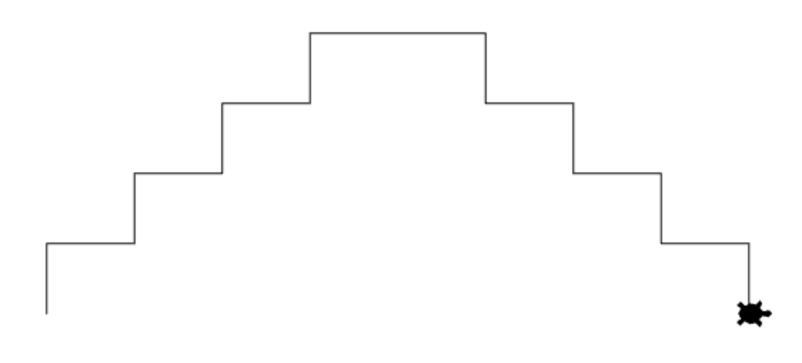
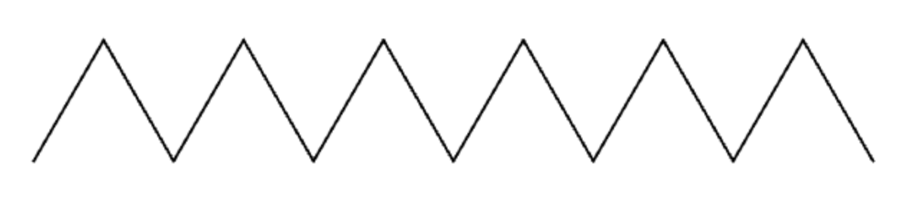
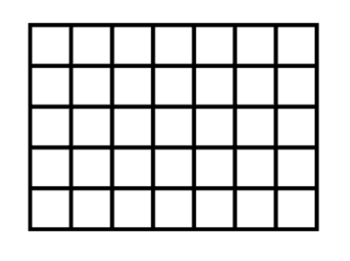

Aufgaben zum Definieren und Verwenden von Funktionen
Datum: 22.11.2024
Aufgabe 1: Doppeltreppe
Definiere einen Befehl doppeltreppe(anzahl_stufen), der eine Treppe zeichnet:
- Der Parameter anzahl_stufen gibt an, wie viele Stufen die Treppe nach oben geht. Danach geht die Treppe genauso viele Stufen wieder hinunter.
- Die Treppe soll in der Mitte des Fensters sein.
- Insgesamt soll die gesamte Doppeltreppe eine Breite von 500 und eine Höhe von 200 haben.
Tipp: Verwende penUp() und penDown(), um die Turtle zuerst in Position zu bringen.

Aufgabe 2: Dreieckreihe
Definiere einen Befehl dreieck_reihe(anzahl, seite), der wie in der Abbildung eine Reihe von Zacken zeichnet:
- Der Parameter anzahl gibt an, wie viele Dreiecke gezeichnet werden sollen.
- Der Parameter seite gibt die Seitenlänge der Dreiecke an.
- Zeichne mit diesem Befehl dann eine Reihe von 20 Dreiecken in der Mitte des Fensters. Jedes Dreieck hat eine Seitenlänge von 31.

Zusatzaufgabe: Gitter aus Quadraten
Definiere eine Funktion gitter(m, n), die ein Gitter aus Quadraten wie in der Abbildung zeichnet:
- Jedes Quadrat soll eine Seitenlänge von 10 haben.
- Der Parameter m gibt an, wie viele Quadrate übereinander liegen.
- Der Parameter n gibt an, wie viele Quadrate nebeneinander liegen.
Beispiel:
Ein Gitter mit m = 5 und n = 7.
